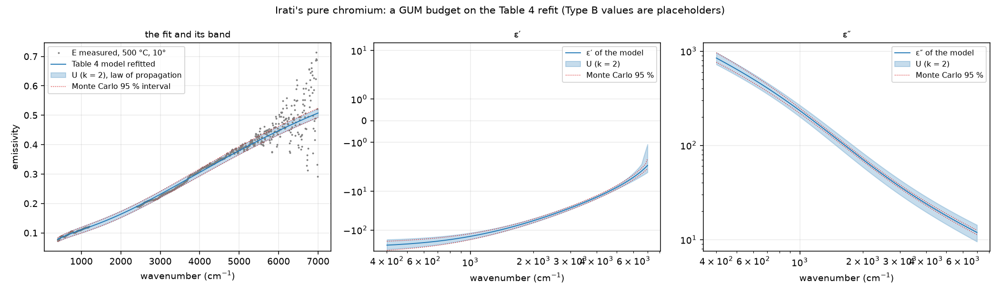

How difes states the uncertainty of a fitted parameter, of a derived quantity and of a curve: an input budget of Type A and Type B components, the law of propagation and the Monte Carlo method of the GUM, a coverage factor, and what none of it can say about a wrong model.
A fit program that prints a number without an uncertainty has not finished. FOCUS prints none; RefFIT prints confidence limits whose absolute size its manual calls human-dependent. difes follows the Guide to the expression of uncertainty in measurement (JCGM 100:2008) and its Supplement 1 (JCGM 101:2008): the fitted parameters are the output quantities of a measurement model whose inputs are the measured spectra, each input carries a budget of components, and the budget is propagated to every output in two independent ways. The module is difes.uncertainty.
A fit minimises \chi^2 = \sum_i w_i\,[y_i - f(\omega_i; \mathbf p)]^2/\sigma_i^2 over the parameters \mathbf p. The inputs are the measured values y_i; their uncertainty has two kinds of component, in the GUM’s terms:
A Budget lists the Type B components, each with its standard uncertainty u_k, its distribution (normal, or rectangular with u = a/\sqrt3 for limits \pm a, GUM §4.3.7), its degrees of freedom, and the spectra it acts on. Its effect on the spectrum is a vector \mathbf g_k: the spectrum itself for a scale, ones for an offset, the derivative for a shift.
At the optimum the parameters respond linearly to a small change of the data (GUM §5, the multivariate form of Supplement 2):
\delta\mathbf p = A\,\delta\mathbf y, \qquad A = (J^{\mathsf T} W J)^{-1} J^{\mathsf T} W,
with J = \partial f/\partial\mathbf p the Jacobian of the model curves at the optimum and W = \mathrm{diag}(w_i/\sigma_i^2) the fit’s weights. The covariance of the inputs is
V_y = \mathrm{diag}(\sigma_i^2) + \sum_k u_k^2\,\mathbf g_k \mathbf g_k^{\mathsf T},
and the covariance of the parameters V_p = A\,V_y\,A^{\mathsf T}. Its first part, (J^{\mathsf T} W J)^{-1}, is the fitter’s own Type A estimate; each Type B component adds u_k^2\,(A\mathbf g_k)(A\mathbf g_k)^{\mathsf T}, so its contribution to parameter j is u_k\,|A\mathbf g_k|_j and the contributions add in quadrature to the combined standard uncertainty u_c(p_j) = \sqrt{(V_p)_{jj}}. The off-diagonal elements are the point: in our problems the correlation is the message (the two Drude terms of chromium, \varepsilon_\infty against the plasma frequencies), and the report prints every correlation above 0.7.
The expanded uncertainty is U = k\,u_c with k = 2 by convention, or k from the t-distribution at the effective degrees of freedom of Welch–Satterthwaite (GUM Annex G), \nu_{\mathrm{eff}} = u_c^4 / \sum_i u_i^4/\nu_i, with \nu = n - m for the Type A part and the stated \nu for each Type B one.
A derived quantity q(\mathbf p), a static dielectric constant, a dc conductivity, a Lyddane–Sachs–Teller ratio, or a whole curve \varepsilon(\omega) or R(\omega) on a grid, is propagated the same way, u^2(q) = \nabla q^{\mathsf T}\,V_p\,\nabla q, which for a curve gives an uncertainty band point by point.
Supplement 1 propagates distributions instead of variances: every input component is drawn from its distribution, the spectra are perturbed (the scale and the offset exactly, the shift and the custom effects through their vectors, the scatter from the error bars), the fit is repeated from the optimum, and the parameters and derived quantities are collected. The coverage interval is read from the percentiles, so it need not be symmetric and does not assume linearity. Because the fitter has analytic derivatives, a few hundred refits of a phonon model take seconds. The two routes agree where the problem is linear, and the Monte Carlo interval is the one to quote where it is not.
The GUM has no mechanism for an inadequate model. When the reduced \chi^2 is far above one, either the input uncertainties are understated or the model does not describe the data; the budget cannot tell which, and no interval computed from it covers a wrong model. difes says so in the report, prints the Type A part both as it is and inflated by \sqrt{\chi^2_{\mathrm{red}}} (the usual practice, which assumes the first explanation), and leaves the judgement where it belongs. The chromium of the validation pages is the example: the two-Drude model of the TFG fits the emissivity to rms 0.037 where the error bars are 0.002, a reduced \chi^2 above 200, and the second Drude term is degenerate with the first; the budget shows the scale and offset components dominating every parameter and the correlations near \pm 1, which is exactly what a reader should know before quoting those numbers.

examples/uncertainty/irati_cr_budget.py.A Kramers–Kronig inversion, a CFRC or a variational fit has no Jacobian worth writing, so the budget goes through it by Monte Carlo alone: monte_carlo_transform(spectrum, budget, f, n) perturbs the spectrum by draws of every component, applies any function f to each draw, and returns the standard deviation and the coverage interval of the output on its grid; kk_eps_uncertainty does it for the finite-range phase transform and gives bands on \theta, \varepsilon' and \varepsilon''. The bands say how much of the inversion the measurement itself determines; the truncation bias of the plain transform is not in them, which is the reason the corrections of this page exist. The suite checks that the bands grow with the budget and cover the true \varepsilon'' of a known case (ledger T36).
In a session the budget is a node of kind uncertainty on a fit node; its outputs are the report, the fitted quantity, \varepsilon' and \varepsilon'', each with its k\,u_c band and, when trials are set, its Monte Carlo interval, as spectra a view can draw. The Bench’s Uncertainty card builds it.
A stated interval has to be checked, and the check is a test in the suite: many synthetic reflectivities are generated from a known model with a 0.3 % scatter and a 1 % scale error drawn anew each time, each is fitted, and its k = 2 interval computed from a budget that states those two components; the intervals must contain the truth about 95 % of the time for every parameter. They do (tests/test_uncertainty.py, ledger record T35). The same tests show the law of propagation reproducing the fitter’s unscaled errors when the budget is empty, the Monte Carlo spread agreeing with the linear one, and a scale component moving \varepsilon_\infty and \omega_p together, more than the scatter does, while leaving the oscillator frequency alone, as the physics of a reflectance edge says.
from difes import Budget, Component, evaluate_uncertainty, fit, FitTerm
res = fit([FitTerm(spectrum, model)])
budget = Budget([Component("E scale", "scale", 0.01), Component("offset", "offset", 0.005),
Component.rectangular("wavenumber", "xshift", 1.0)])
u = evaluate_uncertainty(res, budget, k=2, monte_carlo=300, seed=1,
derived={"eps(0)": lambda ms: ms[0].epsilon(np.array([1e-3])).real[0]})
print(u.report()); u.to_dict() # the budget table, correlations, derived quantities, Monte Carlo intervalsThe values of the Type B components are the laboratory’s to state; the example uses placeholders until the group’s emissivity setup is characterised in these terms.